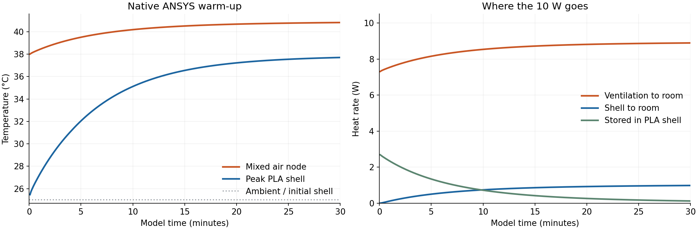

The temperature field is calculated and rendered by ANSYS. The complete robot is shown upright, with a closer view of the solved PLA casing. Video captions report the heat carried to the room by the continuously operating ventilation model.
Download MP4 · Uncropped ANSYS endpoint · Native result history (CSV) · Model definition
The native transient model starts the PLA shell at 25 °C, applies 10 W to a perfectly mixed air node, and removes heat continuously through an assumed 1 CFM exchange with a 25 °C room. Shell conduction and heat storage use k = 0.2 W/(m·K), density = 1240 kg/m³ and heat capacity = 1800 J/(kg·K). Inside and outside film coefficients are 10 and 5 W/(m²·K). The 84,293-node casing mesh uses 41,732 quadratic thermal solid elements.
The fan is on from startup. The air node has zero heat capacity, so its temperature adjusts immediately when power is applied. Only the shell stores heat; the electronics, motor, lids, contacts and radiation are omitted from the thermal model. The historical full-robot CAD still contains the archived motor geometry; the confirmed physical hardware is M2006 with C610.

| Model time | Peak shell | Mixed air | Ventilation |
|---|---|---|---|
| 1 min | 27.25 °C | 38.41 °C | 7.54 W |
| 5 min | 32.04 °C | 39.50 °C | 8.15 W |
| 15 min | 36.55 °C | 40.51 °C | 8.72 W |
| 30 min | 37.70 °C | 40.81 °C | 8.89 W |
At 30 model minutes the casing is still warming slightly: 0.125 W continues to enter shell storage. The final video frame represents that transient state, rather than the fully settled steady solution.
Independent numerical checks passed. Air-node heat balance, shell heat storage, surface heat integrals, and native frame temperatures were checked. Halving the integration step from 5 to 2.5 seconds changed peak shell temperatures by at most 0.0303 °C across the saved states. This verifies numerical consistency, not the unmeasured physical inputs.
The coupled steady model reproduces the earlier casing/ventilation calculation: 38.1110 °C peak shell, 40.9344 °C mixed air and 8.95735 W ventilation. The transient stores 360 result sets at 5-second intervals over 30 model minutes. Video assembly adds captions and combines native ANSYS views; it does not generate the temperature contours.
The early transient has a small numerical minimum of 24.964 °C, about 0.036 °C below the prescribed initial temperature. This is an element/time-discretization artifact, not physical cooling. Raw result histories retain it; the video uses a fixed 25–40 °C display scale.